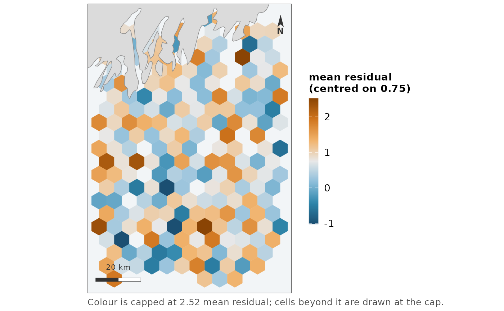

Points with a value each in, one sf polygon per occupied hexagon out, with
the values summarised per bin. The binned form of a quantity, ready to hand
to whichever map verb suits it.
Arguments
- x
Points: an
sfobject, or a data frame with coordinate columns.- value
The value to summarise: a column name or a vector, as in
as_map_data().NULLcounts points instead.- bins, fun
How many hexagons across the extent, and how the values in each are summarised – any
funfancyfx::hex_bin()takes.- coords, crs
As in
as_map_data().
Value
An sf data frame with one row per occupied hexagon: value, the
summarised quantity; n, how many points fell in the bin; and the
hexagon's polygon.
Details
map_effort() bins for you, and always onto a sequential scale, which is
right for the question it asks – how much, where. This is the way out when
the binned quantity needs a different scale. The first customer is model
residuals: binned because 8,000 overlapping segments cannot show a cluster,
and then diverging, centred on the survey's own mean residual, because
deviance residuals do not average zero:
hex <- hex_surface(segments, "resid", fun = "mean")
map_diverging(hex, "value", midpoint = mean(hex$value))Binning happens in the display projection, not in lon/lat, for the reason
map_effort()'s binning does: hexagons binned in degrees are not hexagons
on a map, by the same factor that makes a degree of longitude 74 km in the
Gulf of Maine and 111 at the equator.
See also
map_effort() for the count-where-the-effort-was case,
map_diverging() for drawing the result on a centred scale.
Examples
pts <- sf::st_as_sf(
data.frame(lon = runif(500, -70, -69), lat = runif(500, 43, 44),
resid = rnorm(500, mean = 0.8)),
coords = c("lon", "lat"), crs = 4326)
hex <- hex_surface(pts, "resid", bins = 12, fun = "mean")
map_diverging(hex, "value", midpoint = mean(hex$value),
label = "mean residual")
